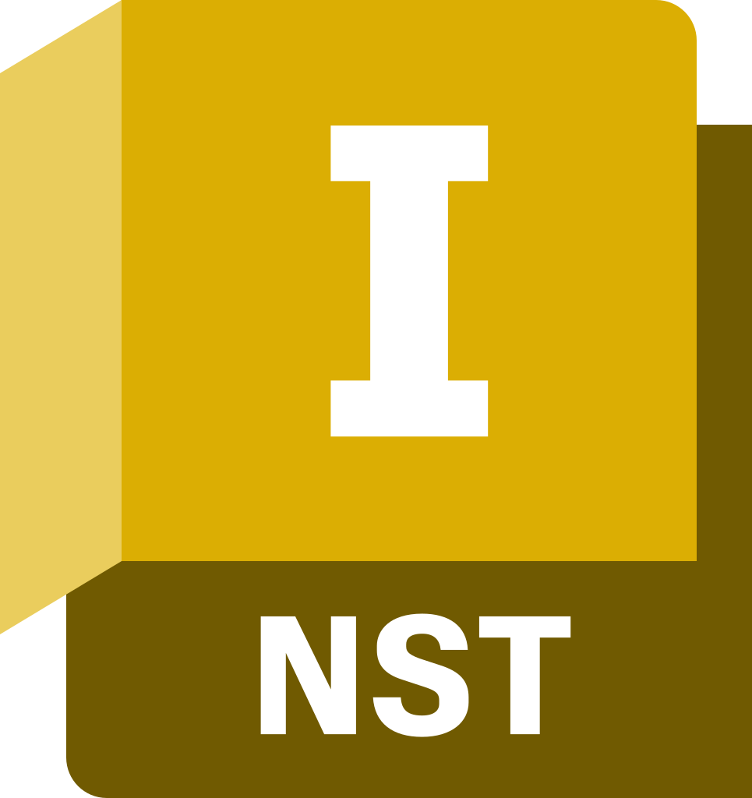

Malzemeyi Değerlendirin, Fireyi Azaltın
Sac ve levha kesiminde en büyük gizli maliyet firedir. Gerçek-şekil yuvalama, parçaları levha üzerine en verimli düzende yerleştirerek aynı işi daha az malzemeyle çıkarır.

Autodesk Inventor Nesting, düz ham malzemeden elde edilen verimi artırırken maliyeti düşürmeye odaklanır: farklı malzeme ve paketleme seçenekleriyle birden çok levha yerleşimi üretilir, bu çalışmaların verimi ve maliyeti karşılaştırılarak en kârlı senaryo seçilir.
Elle yapılan yerleşimde operatör genellikle parçaları dikdörtgen kabul eder ve güvenli bir boşluk bırakır. Gerçek-şekil yuvalama ise parçanın konturunu esas alır; iç boşlukları değerlendirir, döndürme ve iç içe geçirme olanaklarını arar. Aradaki fark tek levhada küçük görünür, yıllık malzeme bütçesinde büyür.
Yazılım ayrıca tane yönü kısıtını da yönetir: estetik gereklilikler veya çatlak riskini azaltmak için parçaların yalnızca izin verilen yönlerde yerleştirilmesi tanımlanabilir. Sonuç yerleşimin 3B modeli oluşturulur ve kesim yolları Inventor CAM ile üretilir ya da DXF olarak dışa aktarılır.
Otomatik gerçek-şekil yuvalama
Parça konturuna göre yerleşim; fire alanı en aza indirilir.
Senaryo karşılaştırma
Farklı levha ölçüleri ve malzemeler için verim ve maliyet yan yana değerlendirilir.
Tane yönü kontrolü
İzin verilen yerleştirme yönleri tanımlanarak görünüm tutarlılığı ve çatlak riski yönetilir.
Kesime aktarım
Inventor CAM ile kesim yolu üretimi veya DXF çıktısı ile mevcut kesim yazılımınıza aktarım.
Sac Metal Nesting
Sac metal parçaların bir sac üzerinde optimum yerleşimi. Malzeme verimini maksimize edin.
Otomatik Rotasyon
Parçaların otomatik döndürülmesiyle en iyi yerleşim. Fiber yönü kısıtlamalarını da destekler.
Çoklu Sac Optimizasyonu
Farklı boyut ve kalınlıktaki sacları birlikte optimize edin. Stok yönetimiyle entegrasyon.
CNC Entegrasyonu
Nesting sonuçları doğrudan CNC programına aktarılır. Kesim yolu otomasyonu.
Fire Raporu
Malzeme kullanım yüzdesi ve fire raporu. Maliyet takibi ve optimizasyon geri bildirimi.
Inventory Yönetimi
Mevcut sac stokuyla entegrasyon. Hangi sactan ne kadar kesilecek otomatik planlanır.


İlgili endüstri sayfalarını inceleyin
Cadbim; Autodesk Gold Partner ve Adobe Gold Reseller Partner, HP, Microsoft, Chaos ve UltiMaker yetkili iş ortağıdır.

Beş adımlı uygulama metodolojimizle sürecin tamamını yönetiyoruz: ihtiyaç analizi, kurgu, devreye alma, yaygınlaştırma ve sürdürme.
Malzeme & Fire Analizi
Mevcut kesim planlarınız ve fire oranlarınız ölçülür.
Kütüphane Kurulumu
Sac/plaka stok boyutları ve malzeme kütüphanesi tanımlanır.
Yerleşim Kuralları
Fiber yönü, kesim aralığı ve etiketleme kuralları yapılandırılır.
CAD/CAM Bağlantısı
Inventor/AutoCAD verisinden kesim planına otomatik akış kurulur.
Ölçüm & Raporlama
Fire ve maliyet raporlarıyla kazanım takip edilir.
Yüzlerce kurulumdan damıtılmış, işleyen iyi uygulama setimiz.
Gerçek stok kütüphanesi
Yerleşim, depodaki gerçek plaka boyutlarına göre yapılır; sanal fire olmaz.
Otomatik yuvalama + manuel rötuş
Algoritma hızlı, son söz operatörde — en iyi ikisinin birleşimi.
Kalan parça (remnant) yönetimi
Artan plakalar kayıt altına alınır ve sonraki işlerde önce onlar tüketilir.
Fire raporlaması
İş bazında fire yüzdesi raporlanır; iyileştirme ölçülebilir olur.
Kesim önceliklendirme
Termin ve malzeme ortaklığına göre işler akıllıca gruplanır.
Etiket & izlenebilirlik
Kesilen her parça etiketiyle sahada doğru istasyona gider.
Aradığınız yanıt burada yoksa uzmanımıza doğrudan sorabilirsiniz.
Inventor Nesting'i ayrı satın alabilir miyim?
Kesim makinemin yazılımı zaten yuvalama yapıyor.
Ne kadar tasarruf sağlar?
Hangi malzemeler için uygundur?
Tedarik sürecin başlangıcıdır; kurulum, lisanslama, kullanıcı eğitimi, teknik destek ve yenileme yönetimi tek muhatap üzerinden yürütülür.
Esnek Abonelik ve Lisans Modelleri
Tek ve çok kullanıcılı abonelikler, 1 ve 3 yıllık dönemler, koleksiyon avantajı — kullanım profilinize uygun planı birlikte belirliyoruz.
Yetkili Eğitim Merkezi (ATC)
Autodesk Yetkili Eğitim Merkezi olarak sertifikalı eğitimler; İzmir merkez ofisimizde sınıf ve çevrim içi programlar.
Türkçe Teknik Destek
Kurulum, lisans yönetimi ve teknik sorularınızda Türkiye'den, Türkçe, aynı gün yanıt.
Kurulum, Lisanslama ve Aktivasyon Desteği
Yazılımların kurulum, lisanslama ve aktivasyon süreçlerinin tamamında teknik destek sağlıyoruz.
Sürücü ve Uyumluluk Çözümleri
İşletim sistemlerinde sürücü kurulumları ve yazılım uyumluluğu konularında teknik çözüm üretiyoruz.
Bu alanda destek alın
Teklif, danışmanlık veya eğitim için iletişime geçin.